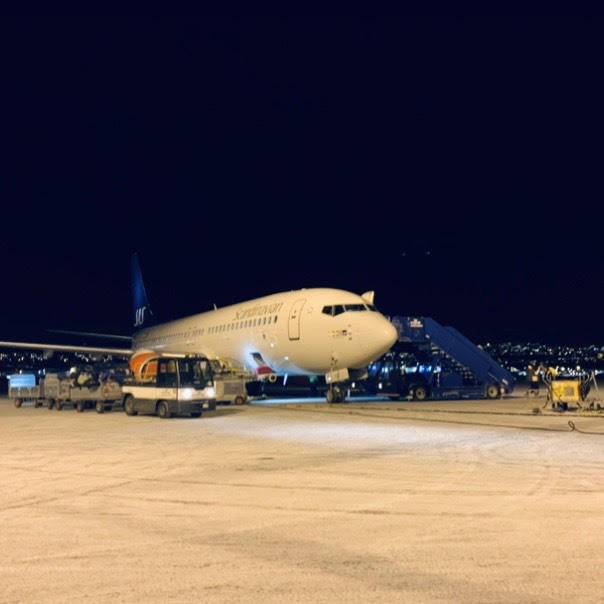
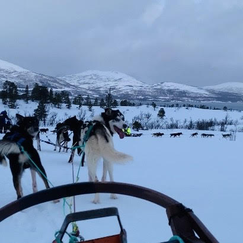
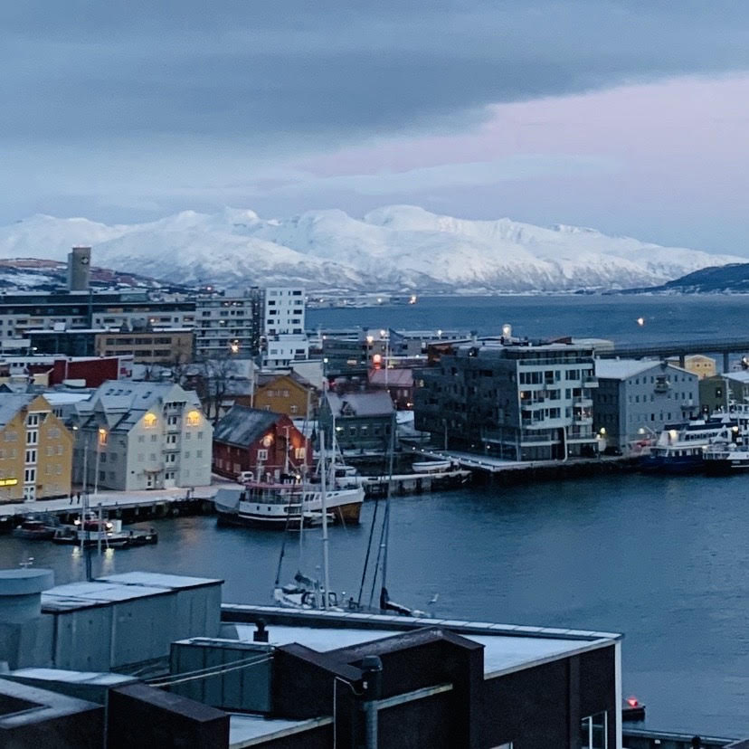

Tromsø（トロムソ）

現在ヨーロッパ滞在中の私。「せっかくなので、オーロラが見たい」と思い、旅行を決意。
ローカルの友人のオススメ、ノルウェー北部に位置する「トロムソ」へ
ブリュッセル国際空港から飛行機で約3時間かけ、行って参りました。
その結果…忘れられない最高の思い出に！
意外にも、たくさんの「癒し」要素のある旅でした。
トロムソの魅力について、是非多くの人に知っていただきたい！と思い、良かった点をまとめたいと思います。
- 300匹ものハスキー犬のおもてなし
- 全身で感じる大自然
- 極寒で育った絶品 海の幸、ジビエ料理
- 店員さんがフレンドリー
300匹ものハスキー犬のおもてなし
実に300匹のハスキー犬を飼育、育成している「Villmarkssenter」では、犬好きにはたまらない最高の体験ができます。
雪景色の中の犬ぞりを、なんと自分で運転させてもらえるのです！
一人は操縦席、一人はそり内。二人分の体重を、5匹の犬が一生懸命運んでくれました。
施設に戻ると、サービス精神旺盛なハスキーたちと触れ合うことができます。
元気いっぱい走り回る生後数ヶ月の仔犬たちも可愛らしく、犬好きの私は終始メロメロでした。
今回は同じ敷地内のコテージに1泊したため、朝は犬たちの遠吠えで目が覚めるという貴重な体験もできました。
宿泊つきプランの料金は下記の通り（2020年2月時点）
| 18才以上 | 2,940NOK |
|---|---|
| 13才〜17才 | 2,646NOK |
| 12才以下 | 1,470NOK |
全身で感じる大自然

雪化粧したトロムソの山々は、圧巻でした。
宿泊は、湾を囲う雪山を一望できるロケーションがオススメです。
北欧文化のサウナを楽しみながら眺める雪山は、まさに贅沢の極み。
同エリア内にジムも設置されており、ラグジュアリーな雰囲気でした。
夜にはオーロラツアーもたくさん開催されているようでした。
我々が臨んだ日はあいにく曇りでしたが、午前1時頃に、うっすらとお目にかかることができました。
しかし、オーロラ以上に感動したのが満天の星。プラネタリウムで見たあの光景は本物であること、そして肉眼で見られるものなんだと知り、感動しました。
雪山の夜中、キャンプファイアーに温まりながらいただいたココアとホットドッグは忘れられません。